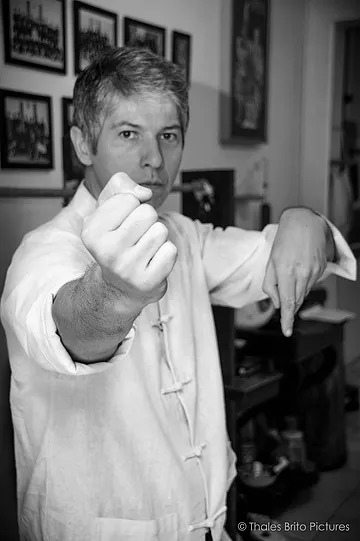

Em Busca da Arte Marcial
Por Thomas Pinheiro
Existem atualmente centenas de estilos, divididos em duas categorias, os externos e internos, isto, no entanto, é um tanto relativo, pois apesar de terem características diferentes, estão sempre presentes, tendo uma a estar presente em quantidade maior ou menor ou, como em alguns estilos, de maneira mais equilibrada, como no Wing Chun.
Quando se procura um estilo de arte marcial para praticar, há diversos interesses que podem impulsionar essa procura. Vão desde a procura de uma defesa pessoal efetiva, buscando auto afirmação, até uma aplicação esportiva ou real defesa. É comum a busca por adolescentes, que possuem necessidade de extravasar impulsos primitivos, como a agressividade e a rebeldia.
Ou em outra situação, profissionais da área de segurança e indivíduos interessados na própria segurança, preocupados com o caos social em que se vive na atualidade. Outros podem estar buscando a arte marcial como uma atividade física, visando a proporcionar uma otimização do desenvolvimento físico, com trabalhos aeróbicos e anaeróbicos. Também há uma importante necessidade quanto a busca de um estado mental equilibrado que proporcione na exigências do exercício físico, um auto domínio do corpo e uma melhora no controle emocional, na concentração e na eliminação de stress.
Considero como a terceira fonte que impulsiona a busca pela prática de uma arte o acumular de novos conhecimentos, cultura, lazer, hobbie. A soma destes interesses à própria constituição psíquica, biológica e social irão proporcionar a escolha, a prática e talvez a condição de se atingir um nível mais alto na prática da arte marcial escolhida. Sob o ponto de vista da procura pela defesa pessoal, o treino deve demonstrar resultados, e para tanto a aplicação é fundamental, não havendo portanto sentido em se fixar na teoria; ela vem com o treino diário e com a capacidade de percepção do aluno.
De que adianta falar, escrever em uma lousa ou achar que por treinar este ou aquele estilo e que por ter treinado ou treinar com este ou aquele mestre ou professor, que estes fatores isolados lhe proporcionem um aprendizado funcional? Digamos que este seria o lado duro, agressivo da arte marcial e como tanto se pode representar com o Yang. Do ponto de vista da atividade física e mental, o aluno terá um confronto consigo mesmo, com suas limitações físicas e psíquicas. Um exemplo comum é o indivíduo que resolve treinar Wing Chun, que imagina estar fisicamente apto, e por isso se julga com total capacidade de assimilar o que lhe será transmitido. Porém, com o andar do treino esse indivíduo se percebe excessivamente tenso e com dificuldades em aceitar críticas e orientações do professor.
Sua musculatura e coordenação não colaboram para a dinâmica das técnicas? a tensão, na maioria da vezes, advém da psiquê do individuo, que também impedem o aprendizado, e comumente são negadas inconscientemente pelo individuo. Julgar-se superior avaliando-se pela questão do porte físico faz distanciar da questão técnica, a qual bem treinada lhe permite um melhor aproveitamento, um maior acúmulo de energia, uma capacidade de superar obstáculos que comumente não conseguiria.
O psicológico é importantíssimo, pois influi diretamente na obtenção e no aproveitamento técnico, incluindo: respiração, coordenação, velocidade, potência, percepção. Esse acaba sendo um treino tão difícil quanto apenas o ponto de vista da defesa pessoal, porém ele será responsável pela melhora do indivíduo numa aplicação real. Seria a representação do Yin. O confronto entre o espírito guerreiro, agressivo, com o auto controle, a paz interna, formam uma dinâmica presente no indivíduo assim como o Yin e o Yang (forças opostas) presentes no universo, em momentos uma predomina mais que a outra, mas estão sempre presentes, buscando um equilíbrio.
O significado de se buscar o treino como uma arte remete a busca de algo dinâmico, complexo, com teorias, e regras que possibilitam o aprendizado e a manutenção da arte praticada de geração a geração. O estudo do que se aprende é constante e permite dentro da fórmula inicial do aprendizado novas descobertas e utilizações.
É como a vida, em constante movimento e significa que nunca acabamos de aprender. Então qual seria o melhor motivo que leve o indivíduo a prática da arte marcial? Utilizando como exemplo o estilo de kung fu, Wing Chun Kuen, o qual pratico, acredito que qualquer forma é válida, porém ao se adentrar num treino aos poucos o aluno deve ascender em si necessidades e descobertas as quais inicialmente não possuía, ou seja, que haja uma complementação em todos os sentidos; como lutador, como indivíduo social, como pessoa mais equilibrada e responsável em suas ações.
Ter ao final a consciência de uma arte é como possuir um tesouro para o resto da vida, e que além de conservar, vamos um dia passar para outro que o mereça. Em termos mais amplos, a prática do Wing Chun Kuen permite ir além do próprio estilo, pois ao atingir-se um determinado nível técnico, o que inicialmente se tinha como forma, já não apresenta mais "forma", em detrimento de apresentar melhores soluções na prática, porém a essência e teoria inicial mantém-se intactas, e continuam a imperar.